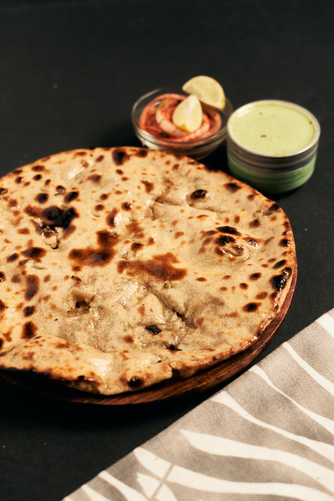

Fluffy Flatbreads

Thrill your friends and impress your neighbours with these deliciously simple flatbreads
Ingrdeients
- 1 teaspoon of dry active yeast
- 1 cup of water
- 3 cups of plain flour
- 1 teaspoon of salt
- 1 tablespoon of olive oil
Instructions
- In a large bowl, combine the water and the yeast until it dissolves. Next slowly add in the flour and salt while mixing with a dough whisk to combine. You should be left with a nice and pilable dough.
- Knead on the counter for 15 minutes and then place in an oiled bowl. Let rest for 1 to 1.5 hours.
- Once it has risen, take it out of the bowl and shape them into 6-7 circles. Cover with a damp towel and let rest for 10 minutes.
- Roll them out into rounds about 1/4 and set them aside. In the meantime, add some oil to a large skillet on medium high heat. Once it is hot add in your flatbreads one at a time. Flip the flat breads after 1 – 2 minutes or when you start to see really large bubbles. Cook the other side for about 1 minutes. Repeat with the rest of your flatbread and keep them warm by wrapping them in a clean dry bowl.